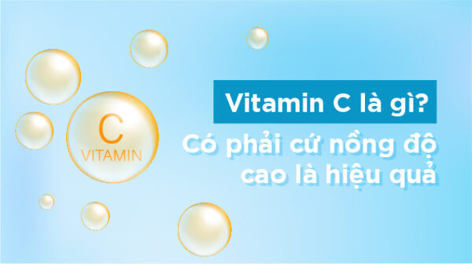

Vitamin C là gì? Có phải cứ nồng độ cao là hiệu quả

Vitamin C là một trong những loại vô cùng quan trọng với cơ thể của mỗi người. Có một làn da chưa được trắng sáng thì đừng vội nản lòng. Vitamin C sẽ là vị cứu tinh cho làn da của bạn. Nhưng việc sử dụng vitamin C như thế nào cho hiệu quả rất nhiều chị em lại chưa biết cách. Và có rất nhiều câu hỏi về cách dùng vitamin C đã được đặt ra. Điển hình là câu. “Có đúng không việc sản phẩm có nồng độ vit C càng lớn thì càng tốt cho da?”
Cùng tìm hiểu với Skinavis trong bài viết dưới đây để tìm được câu trả lời nhé!
1. Vitamin C là gì ?
Trước khi dùng bất kỳ sản phẩm nào, bạn nên biết đó là cái gì? Thực sự nó nằm ở đâu trong cơ thể và hiệu quả ra sao để chúng ta biết dùng đúng cách.
Vitamin C là một nhóm vitamin tan trong nước và nó có mặt ở hầu hết trong cơ thể người. Những nơi có nồng độ cao có thể kể đến là gan, thận và đặc biệt là ngoài da.Các nhà khoa học phân tích rằng trong da có hàm lượng vitamin C rất là cao. Tại sao lại vậy? Hàng ngày cơ quan thường xuyên phải đối mặt với môi trường và các tác nhân bên ngoài chính là làn da của bạn.
Khi da tổn thương, mọi yếu tố ngoại lai có thể dễ dàng vào cơ thể. Nên các bạn có thể thấy rằng da luôn có một lớp màng bảo vệ vững chắc.
2. Tác dụng của vitamin C với da
Giúp chống oxy hoá.
Chống lão hoá.
Chống sự đỏ da vậy nên khi bạn đi nắng về da mới nhanh phục hồi.
3. Dự trữ vitamin C ở đâu trong cơ thể
C được dự trữ ở đâu trong cơ thể? Khác với vitamin nhóm tan trong dầu là vitamin A, Vitamin D, vitamin E, Vitamin K. Vitamin C không chỉ được giữ ở trong gan mà còn các cơ quan khác nội tạng đặc biệt là trong mô mỡ. Do đó các bạn thấy rằng ít người trưởng thành nào phải uống bổ sung vitamin A. Cũng rất ít người phải uống bổ sung vitamin D ta phơi nắng hoặc E và K cũng thế, các bạn hoàn toàn có thể không cần bổ sung vào cơ thể cũng không có vấn đề gì cả.
Nhưng nếu bạn thiếu vitamin C, cơ thể sẽ ra dấu hiệu để bạn biết. Các dấu hiệu có thể kể đến là nhiệt miệng, bong da, xuất huyết dưới da, vết bầm tím, giảm sức bền thành mạch, dễ ốm. Do đó, C là một trong những nhóm vitamin C không thể thiếu mà nó lại không được dự trữ ở cơ thể nhiều.do đó bạn thường xuyên bị thiếu vitamin C.
4. Nhu cầu cung cấp C
Vậy hàng ngày, chúng ta cần bao nhiêu vitamin C là đủ?
Mỗi ngày chúng ta cần 60mg – 90mg. Đặc biệt, với phụ nữ có thai và các bạn hút thuốc nhiều thì cần đến 120mg – 150mg mỗi ngày.
Vậy liệu rằng, việc chọn giữa vitamin C đường uống và vitamin C đường bôi bạn sẽ lựa chọn như thế nào trong làm đẹp ?
Các bạn biết rằng, khi C được bổ sung qua đường uống thì chúng sẽ được phân bổ đều ra các bộ phận, cơ quan, khu vực, các vùng da khác nhau. Còn với đường bôi, chúng sẽ chỉ có tác dụng tại chỗ. Do đó, nếu các bạn mong muốn nâng cao sức đề kháng và làm trắng sáng da toàn thân thì mình vẫn nên dùng đường uống
Còn nếu các bạn muốn da trắng sáng ở trên cơ thể theo vùng ví dụ theo mặt. Khi bạn có da mặt thâm đen sạm hơn toàn thân thì nên dùng vitamin C dạng bôi. Tất nhiên, đường bôi cũng đắt hơn nhiều so với đường uống.
5. Nồng độ vitamin C bao nhiêu là hiệu quả?
Chị em ạ, sản phẩm nào cũng thế chứ không phải riêng vit C, nồng độ càng cao thì tác động của nó trên da càng mạnh mẽ. Điều quan trọng là nó có phù hợp và làn da bạn có hấp thu được không thôi. Với vit C thì nồng độ khoảng 0.6% thì sẽ đem lại hiệu quả tốt nhất. Ngoài ra để sản phẩm có thể phát huy được tác dụng hiệu quả thì còn tùy thuộc vào độ pH. Mỗi sản phẩm lại có một độ pH khác nhau.
Không phải nồng độ càng cao càng tốt mà phải lựa chọn nồng độ phù hợp nhất với làn da. Điều quan trọng không phải là cứ chọn nồng độ vitamin C càng lớn thì càng tốt cho da mà là thấu hiểu làn da của bạn đang muốn gì. Ở đây để giúp đỡ mọi người và xây dựng một cộng đồng chăm sóc da khoa học. Nếu có thắc mắc gì về chăm sóc da,